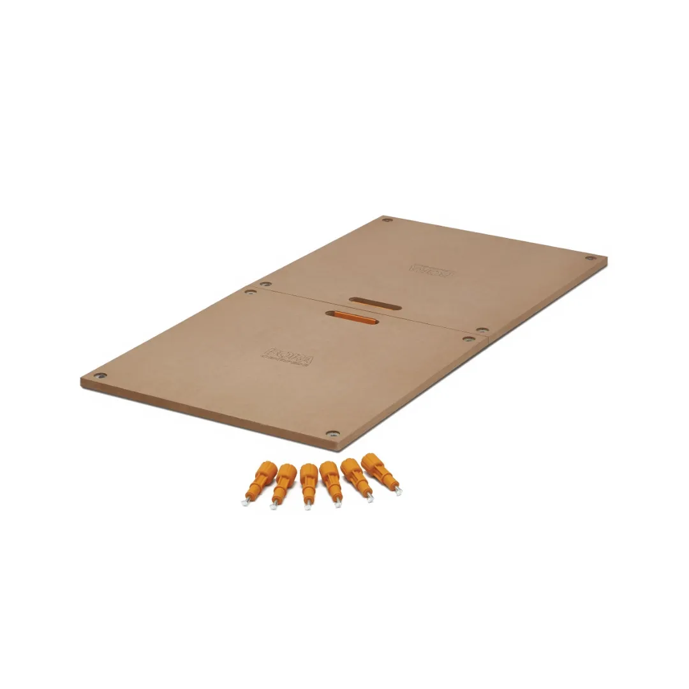
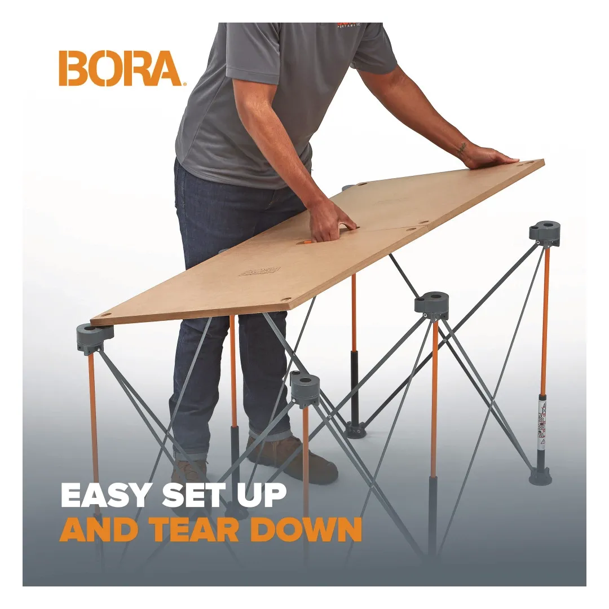
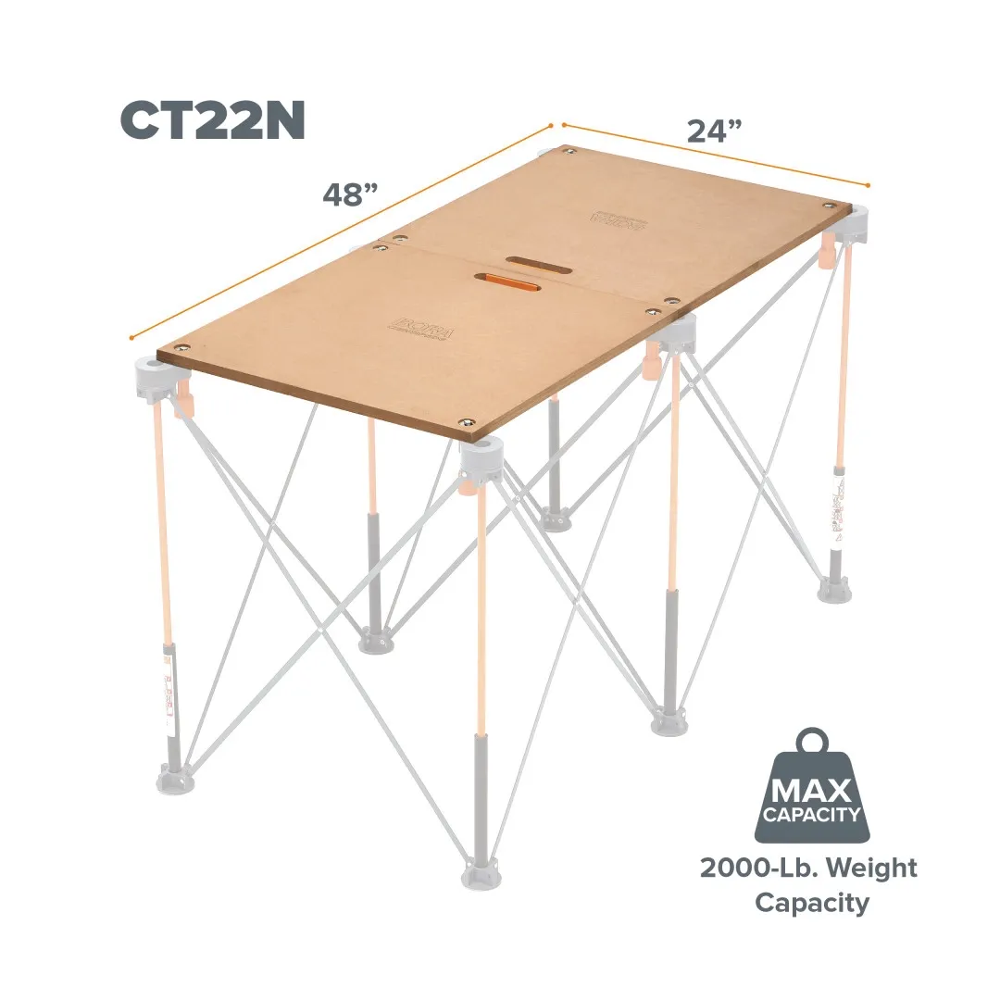
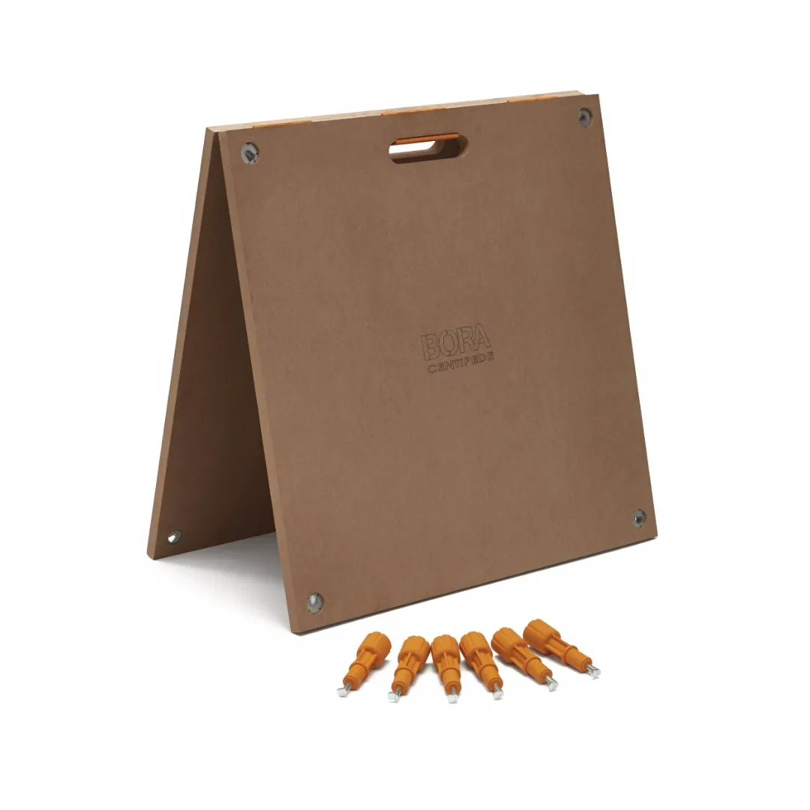
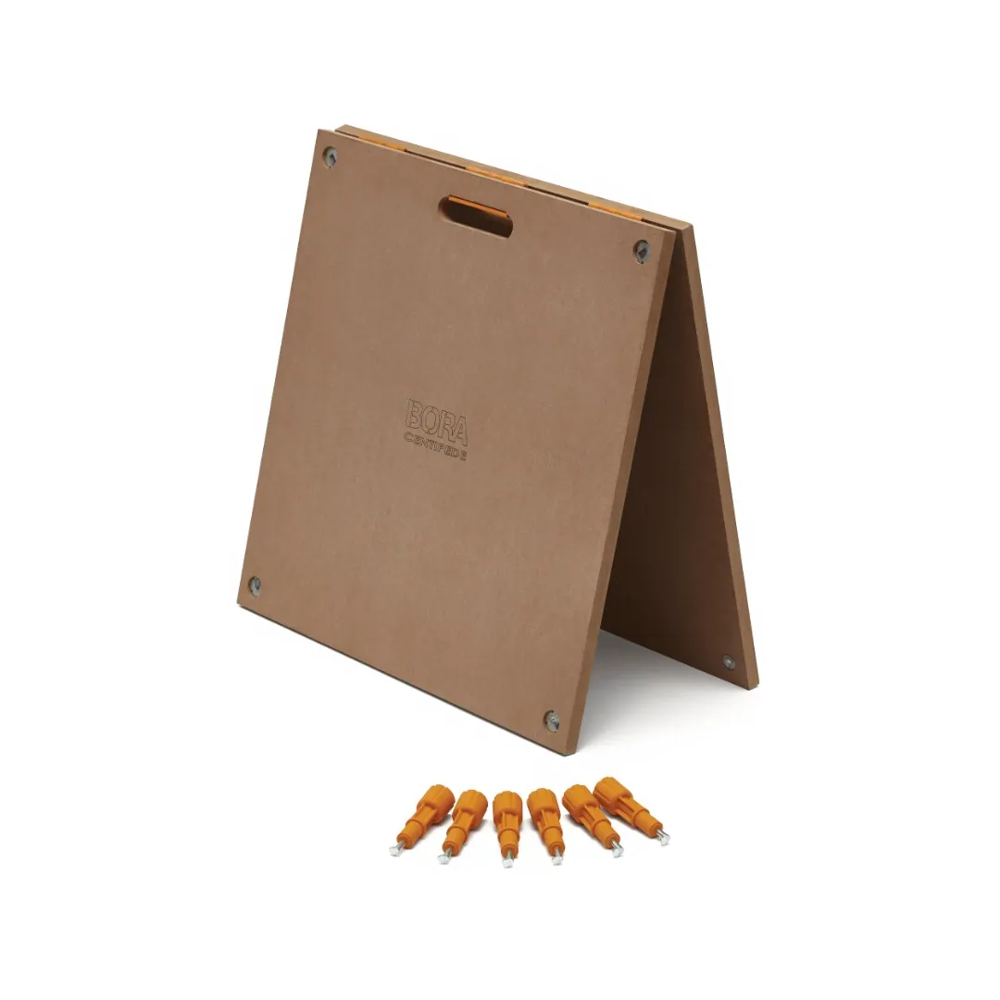

022CT22N





The BORA Centipede Table Top – Plain Pair provides a solid and stable work surface for use with Centipede workstands. It creates a flat platform suitable for a range of tasks, from cutting and assembly to general use.
Key Features
Number of tabletops needed for full coverage varies based on Centipede workstand size (CK6S needs 1, CK9S needs 2, CK15S needs 4).
The tabletop is easy to install and remove, making it a practical addition to any Centipede setup. Its foldable design improves portability while still providing a reliable working surface when in use.
| Size: | 610mm x 1220mm |
| Thickness: | 18mm |
| Load capacity: | 907kg |
| Design: | Hinged foldable panels |
| Compatibility: | BORA Centipede workstands (CK6S, CK9S, CK15S) |